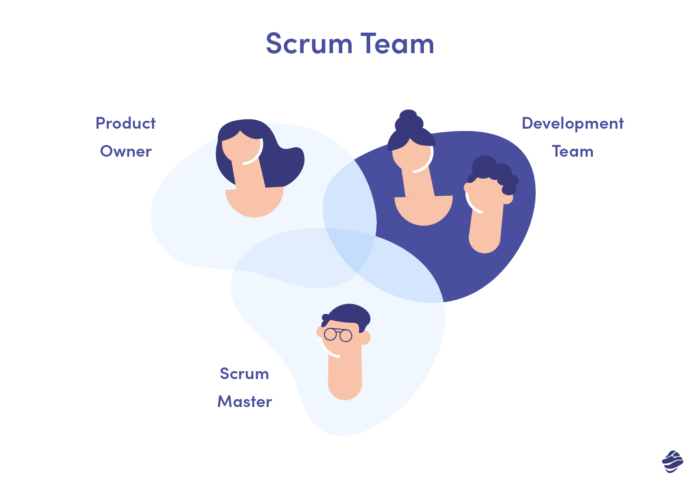
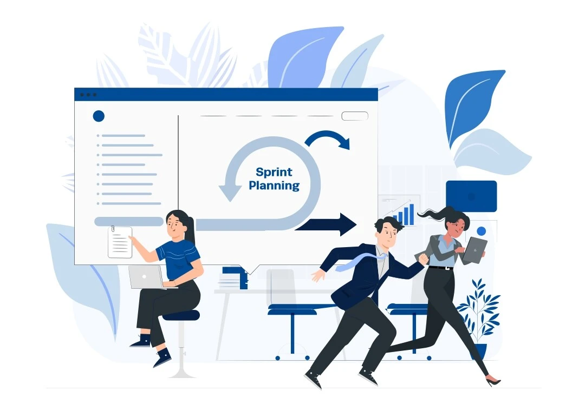
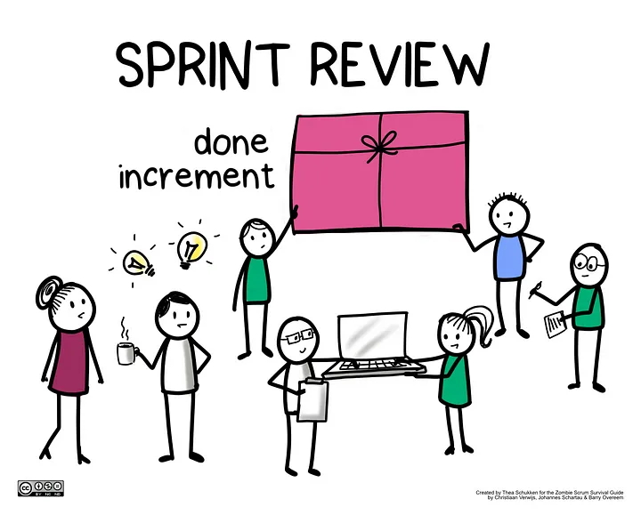
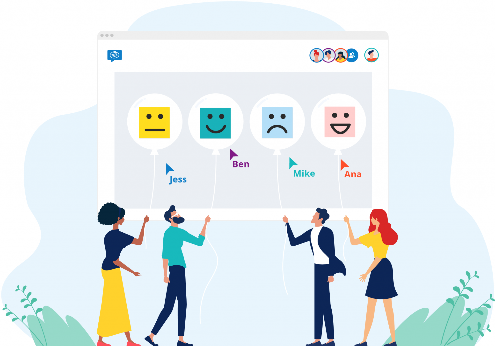
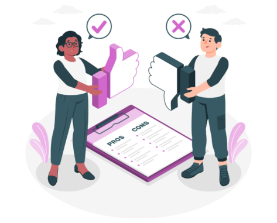

Scrum Framework
Agenda
- Scrum Overview
- Advantages and Disadvantages
- Examples of usage in real projects
Scrum Overview

Increment - valuable shippable product
Scrum Roles
Scrum Master
- Organize SCRUM ceremonies
- Team Support
- Reporting
Scrum Master
- Organize SCRUM ceremonies
- Team Support
- Reporting
- SCRUM coach
- Project Management Tool maintenance
- Resolves dependencies
Product Owner
- Communicates with stakeholders
- Develops product goal
- Owns product vision and shares it with the team
- Manages product backlog
- Prioritize the work
Developers
- Create the product
- Work together to achieve product goal
- Developers, QAs, Designers, DevOps ...
Scrum Ceremonies
Sprint Planning
Purpose: define what scrum team will deliver by the end of the sprint
What is needed for successful Sprint Planning?
- Prepared backlog items
- Full Scrum Team
- Take into account team capacity
- Think about dependencies between items
- Do not overcommit
- Focus on Sprint Goal
How scrum was applied on real project?
Sprint Planning
Project 1
- ~20-30 minutes
- Tickets are prepared
- Past sprint statistics prepared
Project 2
- 1 hour
- Tickets have high-level description
- Team is estimating tickets
Daily Stand-up
Purpose: Catch up with the team, check if team is on track with sprint goal achievements
What should be discussed on Daily?
- Progress of work
- Inform team regarding blockers
- Share updates that can be useful for the team
How scrum was applied?
Daily Stand-up
Project 1
- ~30 minutes
- Status and updates discussion
- Open questions regarding US
Project 2
- ~15 minutes
- Status and updates discussion
Sprint Review
Purpose: Show Sprint Results to stakeholders and teammates and receive feedback
What can we show on sprint review?
- Diagrams with completed tasks/resolved bugs
- Functionality of implemented User Stories
- Focus on business value during demonstration
- Invite customers to provide feedback
Sprint Retrospective
Purpose: Discuss how successful sprint went and improve the process of work
What to do on retro?
- Create Retro Board
- What we need to start doing?
- What we need to stop doing?
- What we need to continue doing?
- Invite team members for voting
- Create action items
- Assign and track action items
Sprint Retrospective
Project 1
- Once per 2 sprints
- Action items were created based on discussion
Project 2
- First day of the sprint
- No clear action items
- Sprint Retro and Planning on the same day
Scrum Advantages and Disadvantages
Advantages
- Flexible
- Constant feedback is received from the customer
- Working product is available in short period of time
- Transparent
Disadvantages
- Many meetings
- Knowledge of SCRUM framework required
- Applicable for small teams
When to use?
- Dynamic Projects
- Requirements changes are expected
- Quick result is required